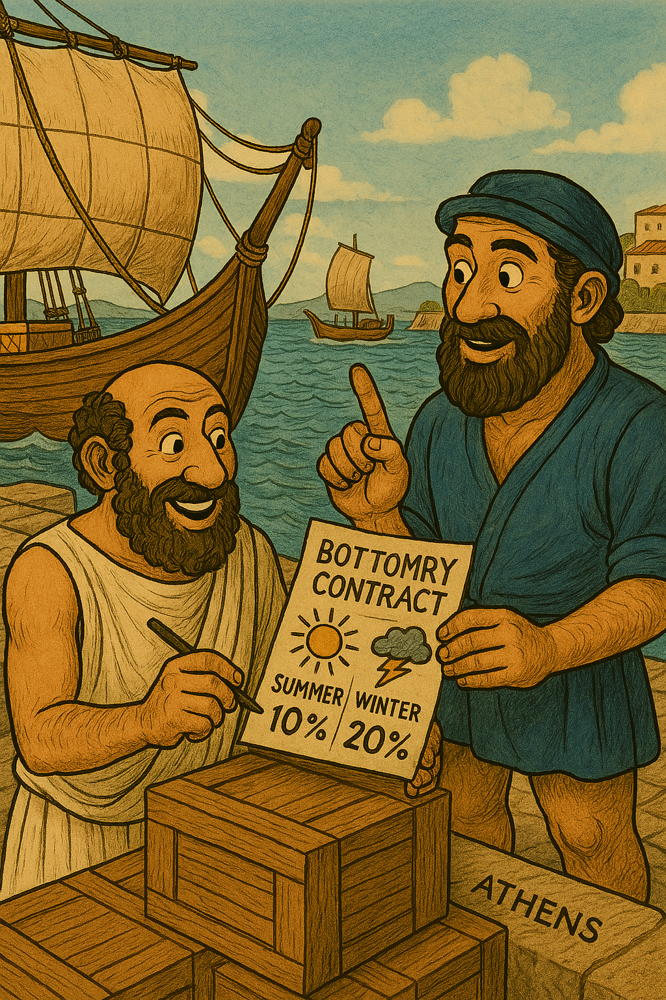

챕터 2: 그리스와 로마 시대
고대 그리스와 로마는 바빌로니아의 기반을 이어받아 위험 관리를 더 정교하게 발전시켰습니다. 그리스는 해상 무역 중심으로, 로마는 사회적·통계적 접근으로 특징지어집니다. 이 시대의 제도는 현대 해상 보험과 생명보험의 선조 역할을 합니다.
Ancient Greece and Rome built upon the foundations of Babylonia to develop risk management more sophisticatedly. Greece was characterized by maritime trade, while Rome by social and statistical approaches. The institutions of this era served as the ancestors of modern marine insurance and life insurance.
그리스: Bottomry 대출의 모험(Greece: The Adventure of Bottomry Loans)
그리스에서는 약 1000 BCE부터 지중해 무역이 번성하며 bottomry 대출이 등장하였습니다. 이는 배를 담보로 한 해상 대출로, 무사 도착 시 높은 이자로 상환하나 손실 시 면책되는 시스템입니다.
4세기 BCE 아테네 기록에 따르면, 이자율은 계절에 따라 변동하였습니다 – 여름은 안전하여 낮고, 겨울은 위험하여 높았습니다. 이는 위험 확률을 암묵적으로 계산한 초기 형태입니다.
또한, 펠로폰네소스 전쟁(431~404 BCE) 기간 아테네 노예 주인들은 국가에 연간 보험료를 내고 노예 사망 시 보상을 받았습니다. 이는 국가 차원의 위험 분산 예시입니다.
Benevolent societies(600 BCE경)도 장례나 질병 비용을 공동 부담하며 risk pooling을 실천하였습니다. 이 제도는 해적과 폭풍 같은 무역 위험을 대처하기 위해 발전하였으며, 아테네의 경제 번영에 기여하였습니다.
In Greece, bottomry loans emerged as Mediterranean trade flourished from around 1000 BCE. This was a maritime loan secured by a ship, repaid with high interest upon safe arrival, but exempted in case of loss.
According to records from 4th century BCE Athens, interest rates varied by season—lower in the safer summer, higher in the riskier winter. This marked an early form of implicitly calculating risk probability.
Additionally, during the Peloponnesian War (431–404 BCE), Athenian slave owners paid annual premiums to the state and received compensation upon the death of slaves, exemplifying state-level risk distribution.
Benevolent societies (around 600 BCE) also practiced risk pooling by collectively covering funeral or illness costs. This system evolved to cope with trade risks like pirates and storms, contributing to Athens' economic prosperity.
그림 2.1: 아테네의 Bottomry 대출, 4세기 BCE
로마: Collegia와 생존여명 계산(Rome: Collegia and Life Expectancy Calculations)
로마에서는 800 BCE부터 제국 규모의 무역과 군대가 위험 관리를 요구하였습니다. Collegia(상호부조 협회)가 핵심으로, 133 CE 하드리아누스 황제 시대 Lanuvium 협회에서 월 회비로 사망 시 장례 비용을 지불하였습니다. 이는 mortality risk를 공유한 초기 생명보험입니다.
220 CE 법학자 울피아누스는 연금과 보상을 위해 사망률을 추정하여 생존여명을 계산하였습니다. 이는 계리학의 초기 도구로, 로마 제국의 연금 시스템(annuities)에 적용되었습니다.
또한, Lex Rhodia(800 BCE 유래, 로마 채택)는 배가 가벼워지기 위해 화물을 버릴 시 모든 상인이 손실을 공유하는 general average 원리를 도입하였습니다.
Bottomry도 로마법에 포함되어 무역 안정성을 높였습니다.
In Rome, the scale of imperial trade and military from 800 BCE demanded risk management. Collegia (mutual aid associations) were central, with the Lanuvium association under Emperor Hadrian in 133 CE paying funeral costs with monthly dues, marking an early form of life insurance sharing mortality risk.
In 220 CE, jurist Ulpian estimated life expectancy by assessing mortality rates for pensions and compensation, an early actuarial tool applied to the Roman Empire’s annuity system.
Additionally, Lex Rhodia (originating from 800 BCE and adopted by Rome) introduced the general average principle, where all merchants shared losses if cargo was jettisoned to lighten a ship.
Bottomry was also incorporated into Roman law, enhancing trade stability.
그림 2.2: 로마의 Collegia 상호부조, 133 CE
이 시대의 발전은 바빌로니아의 법적 기반을 바탕으로 위험을 더 정교하게 관리한 것입니다. 그리스는 해상 중심, 로마는 통계적 접근이 돋보이며, 이는 중세 유럽으로 이어지는 다리 역할을 합니다.
The developments of this era built upon Babylonia’s legal foundations to manage risks more sophisticatedly. Greece excelled in maritime focus, while Rome in statistical approaches, serving as a bridge to medieval Europe.
요약 테이블(Summary)
| 문명 | 주요 제도/사건 | 설명 | 보험계리학과의 연관성 |
|---|---|---|---|
| 그리스 | Bottomry 대출 & 펠로폰네소스 전쟁 보험료 | 해상 대출(이자율 계절 변동), 국가 보상, benevolent societies | 위험 pricing과 risk distribution의 초기 형태, 공동 부담 시스템 |
| 로마 | Collegia & Ulpian's life table | 상호부조 협회(장례 비용), 생존여명 계산, Lex Rhodia | 생존여명 계산과 mutual insurance의 기초, general average 원리 |
출처(references)
- Cohen, E. E. (1997). Maritime Loans in Ancient Greece. The Ancient Economy.
- Perry, J. S. (2006). The Roman Collegia: The Modern Evolution of an Ancient Concept. Brill Publishers.
- Haberman, S. (Ed.). (1995). “Ulpian’s Life Table and Its Use in Roman Law.” History of Actuarial Science, Vol. 2.